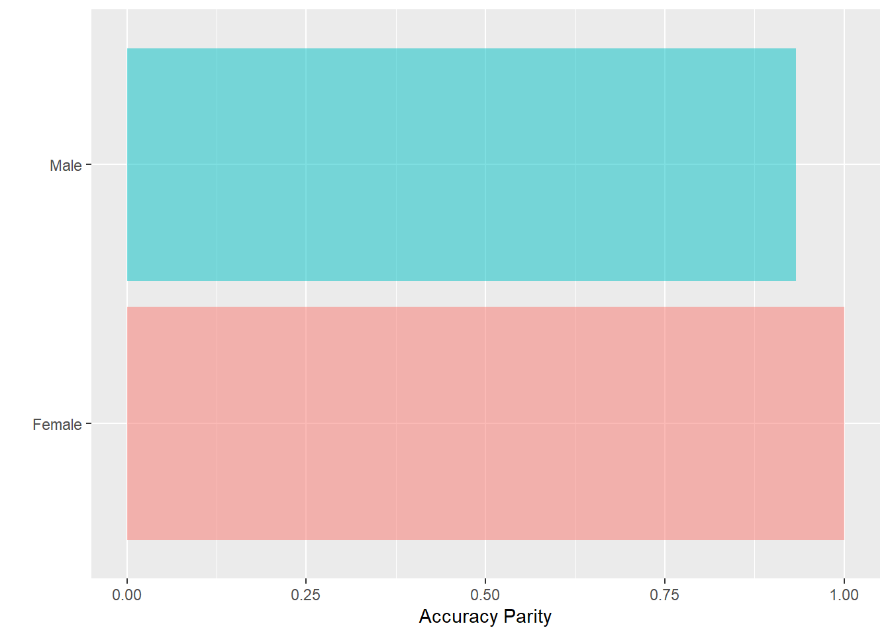

7 Fairness
7.1 Introduksjon til fairness
Compas er et risikoverktøy brukt av amerikansk politi i flere stater som benyttes på individnivå. Bruken av dette verktøyet har vært kontroversielt i flere år og kraftig kritisert av flere. En viktig grunn er at prediksjonene slår forskjellig ut for ulike grupper og er slik sett “biased” mot bl.a. svarte borgere. Resultatet er at de blir mer utsatt for politiets oppmerksomhet enn andre.1 Et datasett er gjort tilgjengelig av Propublica her som vi skal bruke.
Code
compas <- readRDS("../data/compas.rds")
glimpse(compas)Rows: 6,172
Columns: 7
$ Two_yr_Recidivism <fct> 0, 1, 1, 0, 1, 0, 0, 0, 1, 0, 0, 1, 1, 0, 0, 1, 1…
$ Number_of_Priors <int> 0, 0, 4, 0, 14, 3, 0, 0, 3, 0, 0, 1, 7, 0, 3, 6, …
$ Age_Above_FourtyFive <fct> 1, 0, 0, 0, 0, 0, 0, 0, 0, 0, 0, 1, 0, 0, 0, 0, 0…
$ Age_Below_TwentyFive <fct> 0, 0, 1, 0, 0, 0, 0, 0, 1, 0, 0, 0, 0, 0, 0, 0, 0…
$ Misdemeanor <fct> 0, 0, 0, 1, 0, 0, 1, 0, 1, 1, 0, 0, 0, 1, 0, 0, 0…
$ Ethnicity <fct> Other, African_American, African_American, Other,…
$ Sex <fct> Male, Male, Male, Male, Male, Male, Female, Male,…Vi tilpasser først en random forest modell.
Code
set.seed(4356)
glimpse(compas)Rows: 6,172
Columns: 7
$ Two_yr_Recidivism <fct> 0, 1, 1, 0, 1, 0, 0, 0, 1, 0, 0, 1, 1, 0, 0, 1, 1…
$ Number_of_Priors <int> 0, 0, 4, 0, 14, 3, 0, 0, 3, 0, 0, 1, 7, 0, 3, 6, …
$ Age_Above_FourtyFive <fct> 1, 0, 0, 0, 0, 0, 0, 0, 0, 0, 0, 1, 0, 0, 0, 0, 0…
$ Age_Below_TwentyFive <fct> 0, 0, 1, 0, 0, 0, 0, 0, 1, 0, 0, 0, 0, 0, 0, 0, 0…
$ Misdemeanor <fct> 0, 0, 0, 1, 0, 0, 1, 0, 1, 1, 0, 0, 0, 1, 0, 0, 0…
$ Ethnicity <fct> Other, African_American, African_American, Other,…
$ Sex <fct> Male, Male, Male, Male, Male, Male, Female, Male,…Code
rf <- randomForest(Two_yr_Recidivism ~ .,
#importance = TRUE,
data = compas)Lager en prediksjon i nytt datasett
Code
compas_p <- compas %>%
mutate(pred_rf = predict(rf)) Confusion matrix
Code
confusionMatrix(compas_p$pred_rf,
compas_p$Two_yr_Recidivism, positive="1")Confusion Matrix and Statistics
Reference
Prediction 0 1
0 2462 1132
1 901 1677
Accuracy : 0.6706
95% CI : (0.6587, 0.6823)
No Information Rate : 0.5449
P-Value [Acc > NIR] : < 2.2e-16
Kappa : 0.3313
Mcnemar's Test P-Value : 3.378e-07
Sensitivity : 0.5970
Specificity : 0.7321
Pos Pred Value : 0.6505
Neg Pred Value : 0.6850
Prevalence : 0.4551
Detection Rate : 0.2717
Detection Prevalence : 0.4177
Balanced Accuracy : 0.6645
'Positive' Class : 1
Splitter datasettet i to etter kjønn. Her for menn.
Code
compas_1 <- compas_p %>%
filter(Sex == "Male")Confusion matrix for menn
Code
confusionMatrix(compas_1$pred_rf,
compas_1$Two_yr_Recidivism, positive="1")Confusion Matrix and Statistics
Reference
Prediction 0 1
0 1807 897
1 794 1499
Accuracy : 0.6616
95% CI : (0.6483, 0.6747)
No Information Rate : 0.5205
P-Value [Acc > NIR] : < 2e-16
Kappa : 0.3209
Mcnemar's Test P-Value : 0.01312
Sensitivity : 0.6256
Specificity : 0.6947
Pos Pred Value : 0.6537
Neg Pred Value : 0.6683
Prevalence : 0.4795
Detection Rate : 0.3000
Detection Prevalence : 0.4589
Balanced Accuracy : 0.6602
'Positive' Class : 1
Splitter datasettet i to etter kjønn. Her for kvinner.
Code
compas_2 <- compas_p %>%
filter(Sex == "Female")Confusion matrix for kvinner
Code
confusionMatrix(compas_2$pred_rf,
compas_2$Two_yr_Recidivism, positive="1")Confusion Matrix and Statistics
Reference
Prediction 0 1
0 655 235
1 107 178
Accuracy : 0.7089
95% CI : (0.682, 0.7348)
No Information Rate : 0.6485
P-Value [Acc > NIR] : 6.251e-06
Kappa : 0.3128
Mcnemar's Test P-Value : 6.539e-12
Sensitivity : 0.4310
Specificity : 0.8596
Pos Pred Value : 0.6246
Neg Pred Value : 0.7360
Prevalence : 0.3515
Detection Rate : 0.1515
Detection Prevalence : 0.2426
Balanced Accuracy : 0.6453
'Positive' Class : 1
Bruker funksjoner i fairness-pakken til å gjøre det samme:
Code
acc <- acc_parity(data = compas_p,
outcome = 'Two_yr_Recidivism',
group = 'Sex',
preds = 'pred_rf',
base = 'Female')
acc$Metric Female Male
Accuracy 0.7089362 0.661597
Accuracy Parity 1.0000000 0.933225
Group size 1175.0000000 4997.000000Her er en grafisk fremstilling av ACC
Code
acc$Metric_plot
7.2 Flere mål på fairness
7.3 Tuning til mer fairness
7.4 Oppgaver
Det er verd å minne på at politi i USA i stor grad er mer hardhendte enn norsk politi. Konsekvensene er altså litt mer alvorlig enn at unødig mange føler seg unødig mistenkte.↩︎